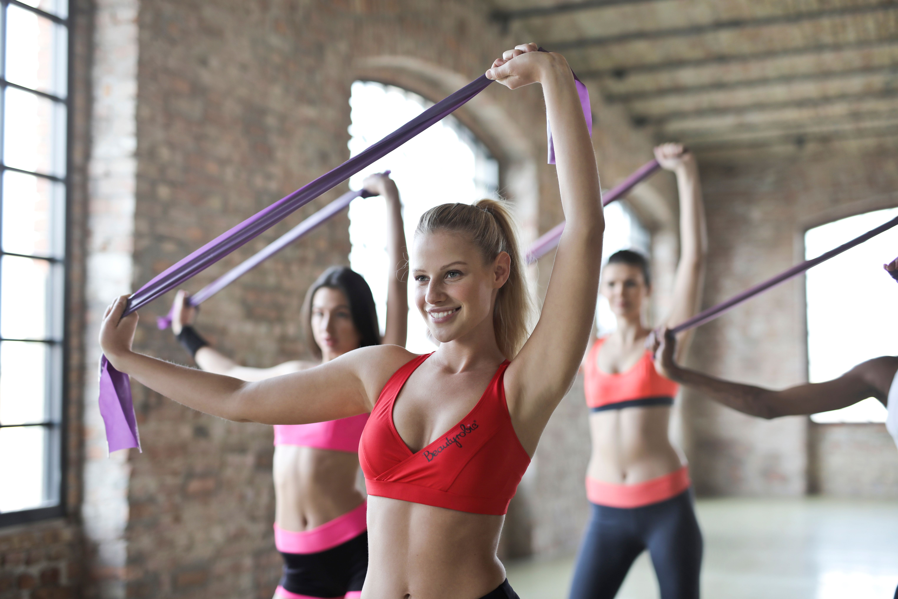
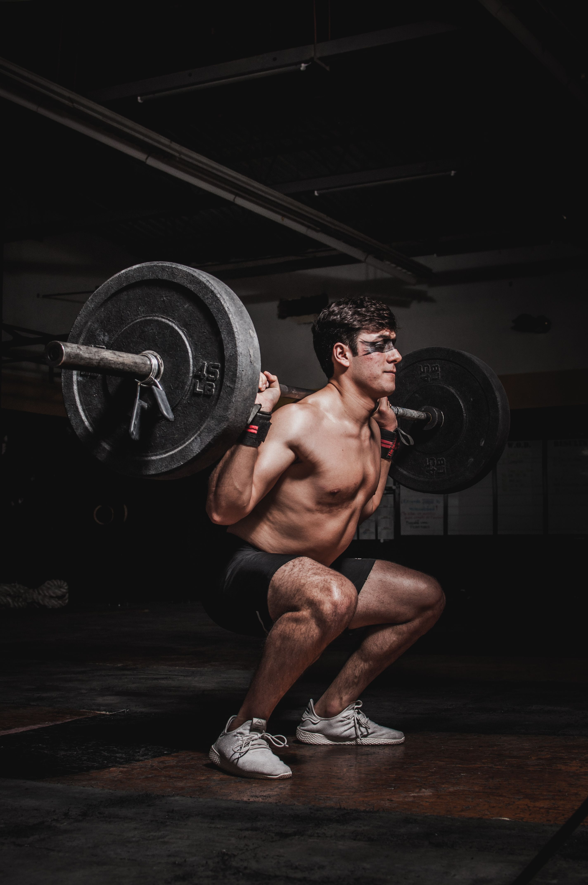

Athletic Motion Analysis
A computer-vision tool that tracks 33-point body landmarks across uploaded video to surface objective biomechanical metrics and flag movement inefficiencies for coaches.

Overview
Processes uploaded training footage frame-by-frame using MediaPipe Pose to extract joint positions, compute joint angles, velocity vectors, and symmetry scores, then renders skeleton overlays directly onto the video. A Streamlit dashboard presents aggregated biomechanical metrics alongside deviation charts comparing an athlete's movement to a baseline session.
Technologies
Python · MediaPipe Pose · OpenCV · NumPy · SciPy · Matplotlib · Streamlit · ffmpeg (video export) · pandas (session logging)
Outcome
Cut post-session film review time by an estimated 70% for coaches who piloted the tool. Replaced purely subjective eye-test feedback with reproducible angle and symmetry scores, enabling direct before/after comparison across training cycles and surfacing asymmetries invisible to the naked eye at full playback speed.


Left: MediaPipe skeleton overlay on a sprint clip with hip, knee, and ankle angles annotated per frame, and a velocity vector rendered at the center of mass. Right: the Streamlit dashboard showing per-joint angle timeseries, left/right symmetry scores, and a deviation heatmap comparing the current session against the athlete's baseline recording.